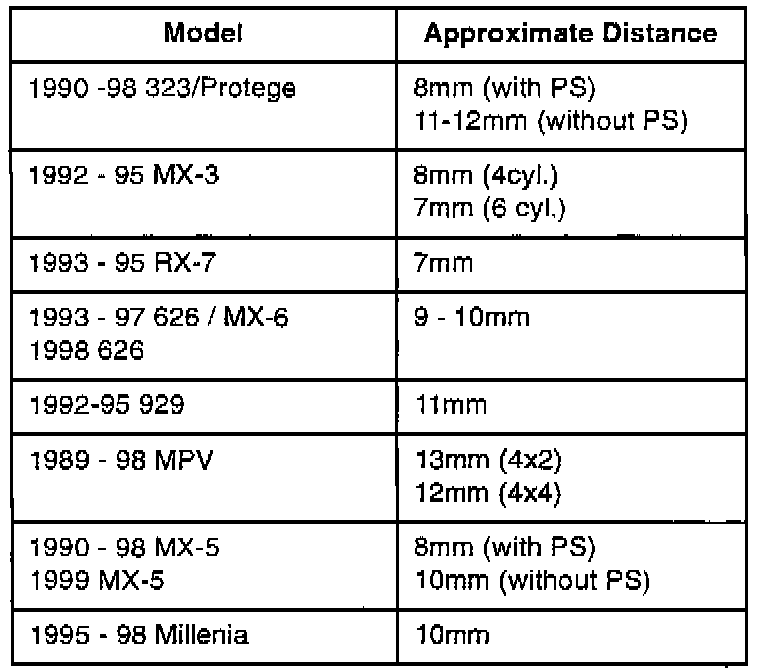

Steering Wheel - Slightly Off Center.
Bulletin No.: 001/98Issued: 04/15/98
Revised:
Category
N (06)
Applicable Model/s
All Models
(Ex. Nav. & B-Ser.)
Subject
STEERING WHEEL SLIGHTLY OFF CENTER
NOTE:
This bulletin replaces bulletin 001/94, 005/95 and 001/96 (all in Category N). Please make a note of this in your respective bulletin books.
APPLICABLE MODELS
All Models except the Navajo and B-Series.
DESCRIPTION
Some vehicles may have an off center steering wheel but no right or left hand pulling. Customers complaining of this concern should have the vehicle inspected and if necessary, repaired according to this bulletin.
REPAIR PROCEDURE
1. Test drive the vehicle on a straight road.
2. Place the steering wheel in a neutral position. Do not apply any turning effort.
^ If the vehicle tracks straight and the steering wheel is NOT in a centered position, proceed to step 3.
3. Use the outside circumference of the steering wheel to measure the distance between the center position and the neutral position.
^ If the measurement is more than 3O mm (1.18 in) remove the steering wheel and install it in the centered position. Refer to the workshop manual for removal and installation procedures.
^ If the measurement is less than 30 mm (1.18 in):
a) Loosen both right and left hand tie-rod end lock nuts.
b) Turn the tie-rod ends in opposite directions by equal amounts, until the steering wheel is centered.
3. Verify the repair.

The chart above shows the approximate distance the outside diameter will move for every 1/4 (90 degree) turn of the tie-rod end.
WARRANTY INFORMATION
(Applies To Verified Customer Complaints On Vehicles Covered Under Normal Warranty. Refer To The SRT Microfiche For Warranty Term Information.)
Warranty Type: A
Symptom Code: 30
Damage Code: 9H
Part Number Main Cause: 5555-FE-001
Quantity: 0
Operation Number: XX064ORX
Labor Hours: 0.5 Hrs.